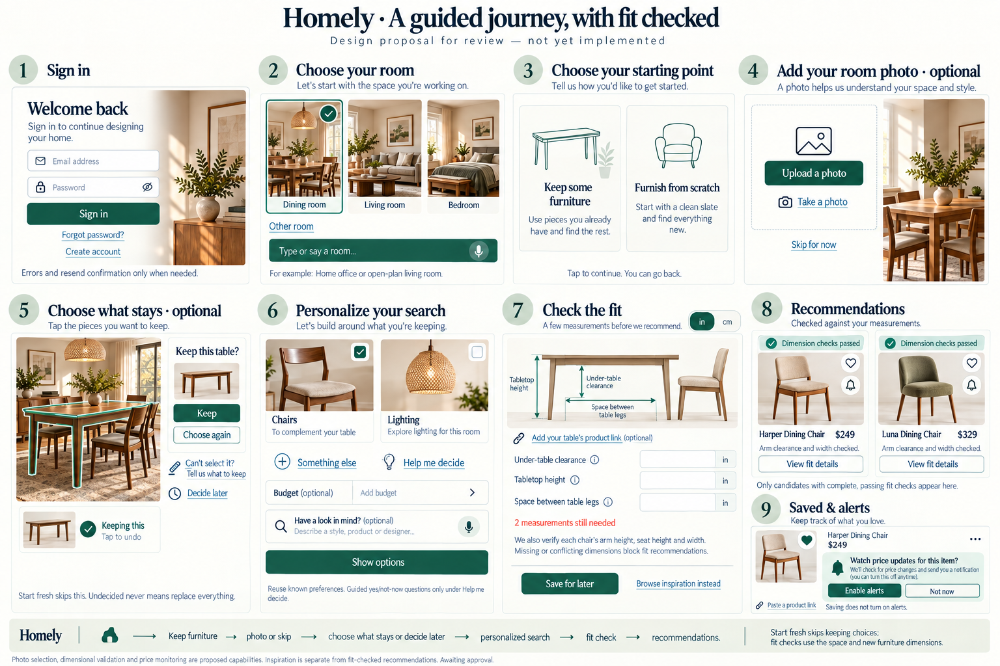
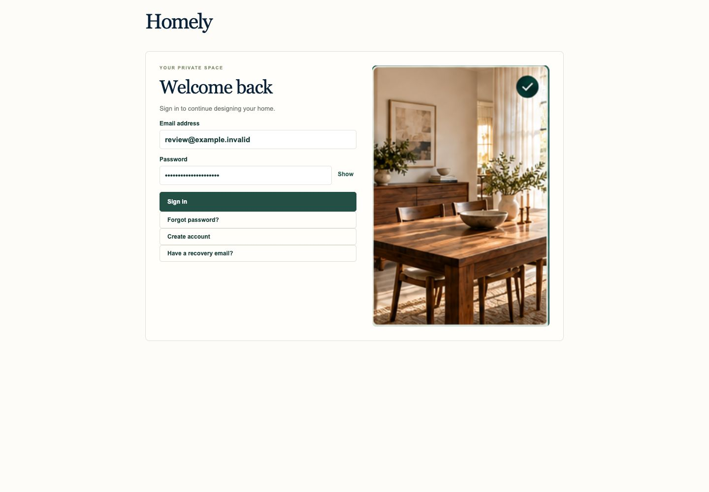
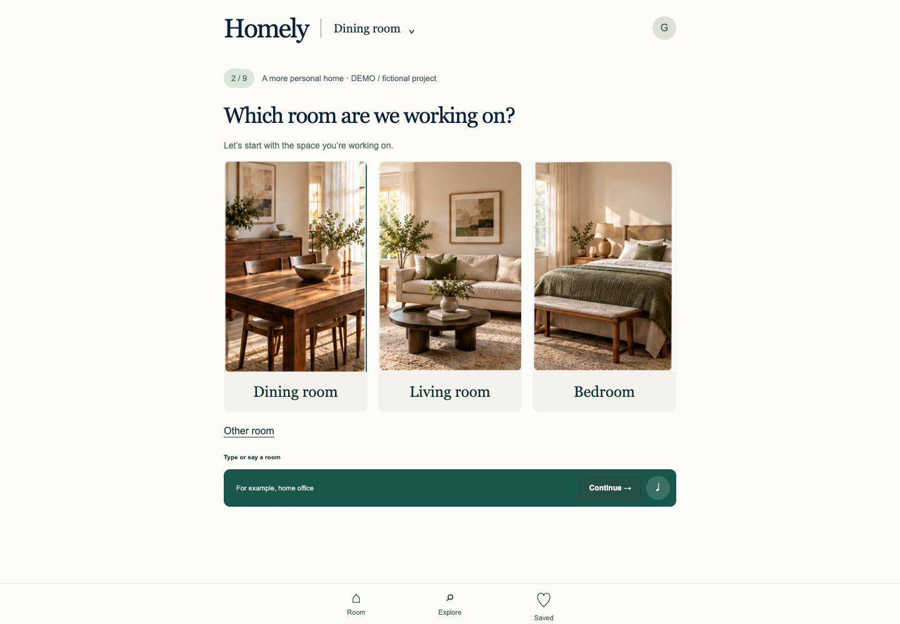
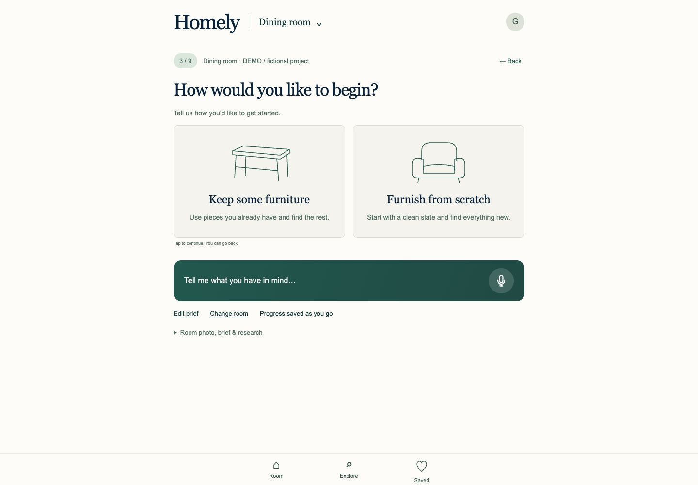
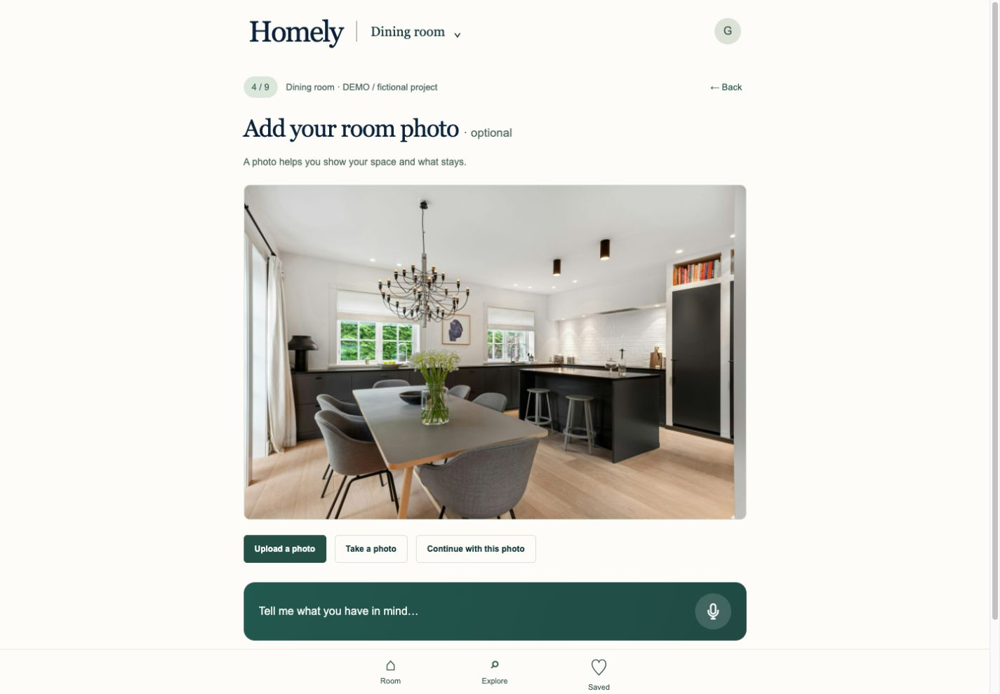
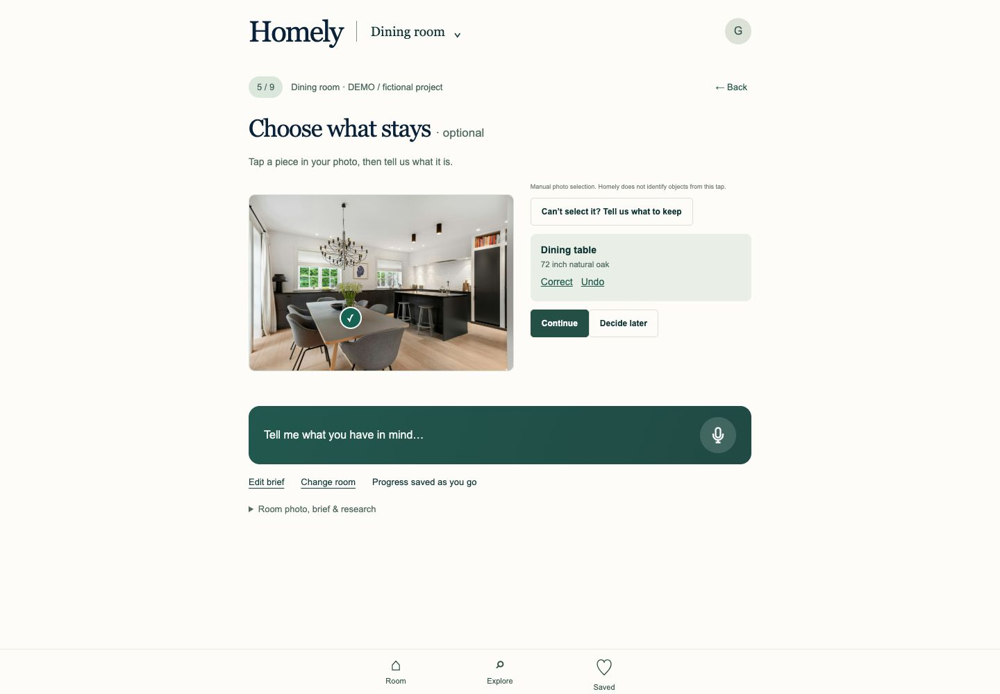
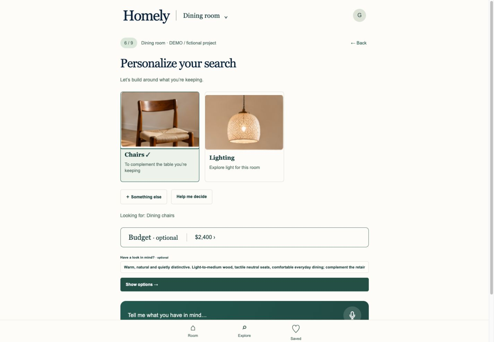
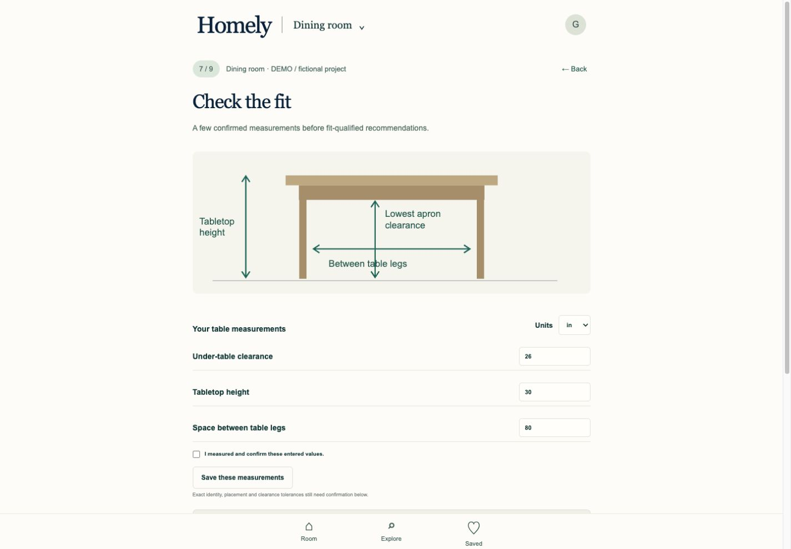
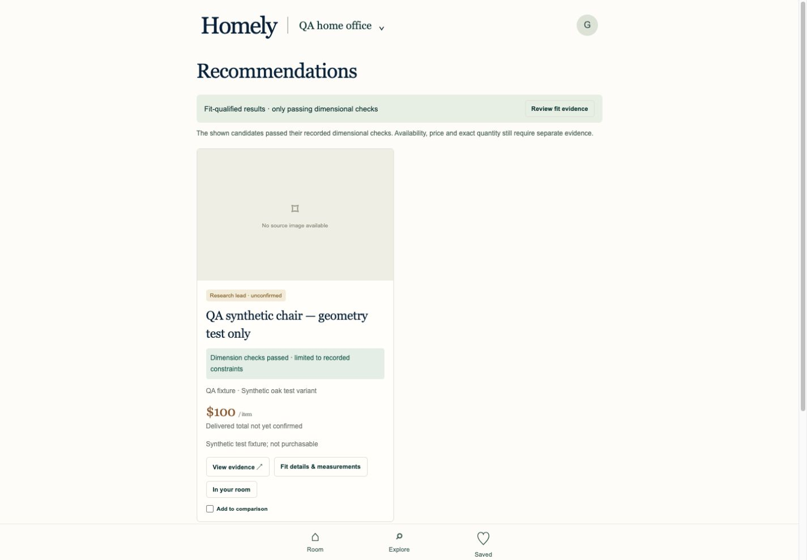
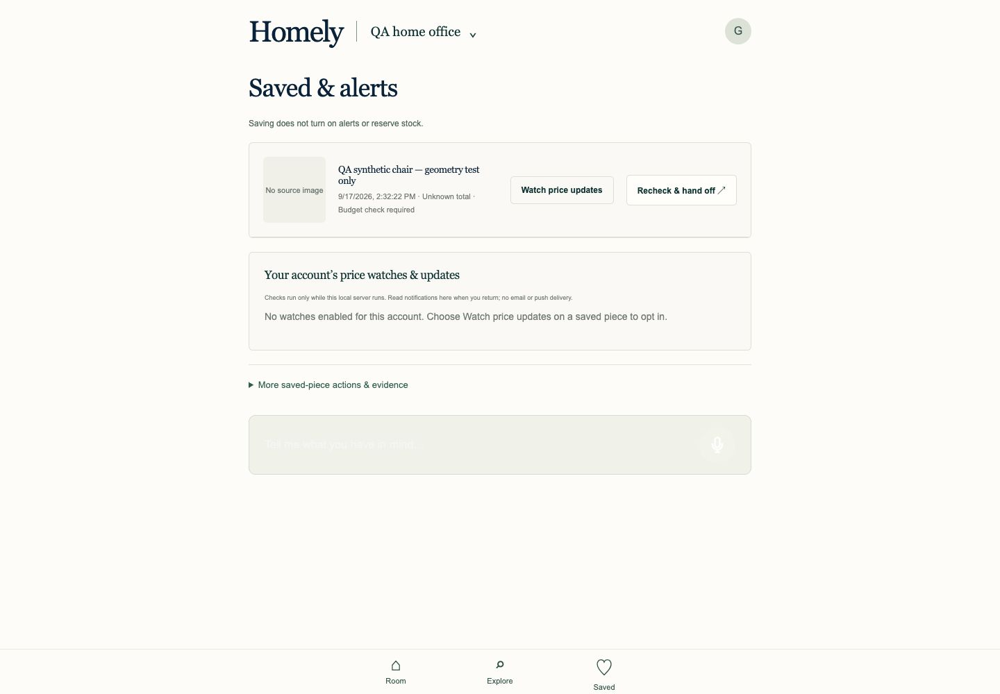

1 Sign in


Matches Navy welcome heading, green sign-in action, form beside room inspiration; compact shell.
Differences Image crop differs and recovery completion adds an extra action. Mobile hides the decorative image.
Evidence & limits Signup/sign-in and recovery UI regression tests pass. Recovery verifies a provider recovery token before password update; mocked backend tests only. Actual form opened; no email or credential change submitted.
2 Choose your room

Matches Three room-photo cards, other-room entry and one green type-or-say composer.
Differences Card proportions, copy and project header differ slightly.
Evidence & limits Actual custom room creation and saved selection verified. Voice capture on the actual device remains untested.
3 Choose your starting point

Matches Two illustrated choices, explicit keep/fresh choice and immediate progression.
Differences Simpler SVG line art and additional persistent assistant.
Evidence & limits Both branches tested; fresh skips retained-object selection. No default furnishing mode.
4 Add your room photo

Matches Optional upload and camera-picker controls; real original room photo persists.
Differences Captured state already has an uploaded photo; large image replaces the empty upload illustration in the reference.
Evidence & limits Actual local stock-photo upload and reload passed with external-image-provider consent unchecked. Camera hardware capture not run; native picker is used.
5 Choose what stays

Matches Room photo, explicit retained identity/variant, correction, undo and decide-later choices.
Differences Manual point marker replaces the reference object outline and isolated table thumbnail.
Evidence & limits Actual marker confirmation, correction and reload passed. This is manual annotation, not AI object recognition. Undo/mismatch blocks stale fit in regression tests.
6 Personalize your search

Matches Photo category cards with reasons, Something else, guided help, optional budget/style and green primary action.
Differences Different category imagery; mobile wraps contextual categories and requires scrolling.
Evidence & limits Actual guided Yes/Not now selection and preserved preferences verified; category suggestions reuse the retained table and existing brief.
7 Check the fit

Matches Measurement diagram, inch/cm selector, three primary fields, product-link option and explicit fit gate.
Differences Simplified vector table instead of a rendered table/chair; additional evidence and tolerance controls make this screen longer.
Evidence & limits Actual table and fresh-room evidence entry passed; 26in converts to66.04cm. Missing/conflicting identity, variants, dimensions and tolerances block qualification. Only parallel table rows and an unobstructed rectangular grid are supported.
8 Recommendations

Matches Product cards appear immediately under a compact fit status, with explicit dimensional-check status and evidence actions.
Differences QA uses one clearly labelled synthetic candidate, so there is no verified source product image. Card details are longer than the reference.
Evidence & limits Actual candidate was hidden from qualified results until exact measurements were entered, then passed only recorded geometry. Availability, delivered price and quantity remain independently unconfirmed. No new paid discovery call was made.
9 Saved & alerts

Matches Saved piece first, separate explicit watch opt-in and account notification section.
Differences No verified product image for the QA candidate. Watch prompt is a dialog, with more explicit local-server limitations.
Evidence & limits Actual saved decision survived refresh; saving enabled no watch. Missing-source evidence correctly rejected opt-in. Real scheduler thread and HTTP notification/read/cancel/owner tests passed with synthetic source responses. Live merchant checks and email/push delivery not verified; email/push are not implemented.
Full measurement screen · Fresh-room geometry branch · Backend log · Cloud log
{kind=link}
{kind=link}